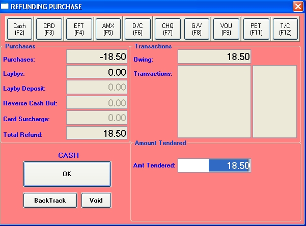

Customer returns are processed almost identically to a standard sale. Before scanning the barcode of the item to be return, click on the Returns (F7) button at the top of the screen or push the F7 key. 'Processing Returns' will be displayed in the Notices area of the window. The next scanned items will now be treated as a return. You can change the price, quantity and discount as in a standard sale. After you save a refunded line, it displays in the browser with a negative quantity.
To complete the refund, click on the Finalise button (F12). The Tendering window will be shown in refund mode as shown below. Select the tender type as for a standard sale and click the OK button to complete the sale.

Note
The POS window will revert to sales mode when you save a refunded line. So you will need to push the F7 key before each scan of a refunded item.
Exchanges
You can mix sales and refunds in the one transaction. In the case of an exchange, where the prices of the refund and its replacement are the same, the tendering will display will a zero amount owing. Just click OK to finalise the sale.
EFTPOS and refunds
If you are refunding using EFTPOS, select the EFTPOS transaction type in the tendering window. If reversing an EFTPOS sale that included customer 'cash out', and you wish to reverse the entire transaction, enter the cash out amount in the Reverse Cash Out field.
| |